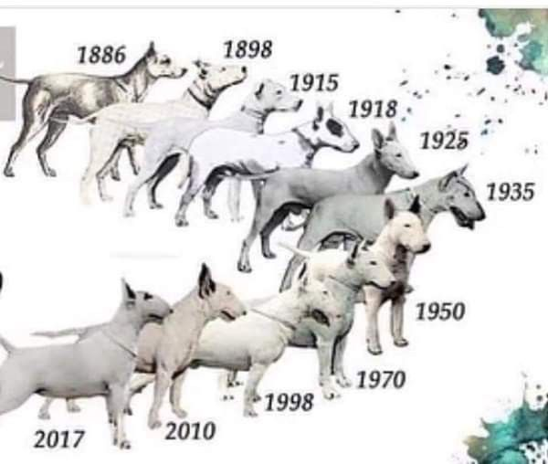
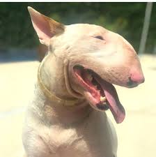

Navegação
Minha página de fotos
Origem da raça

O Bull Terrier é uma raça canina originária da Inglaterra, desenvolvida no século XIX. Sua criação teve como objetivo reunir força, resistência e coragem, características valorizadas em combates entre cães, prática infelizmente comum na época. A raça surgiu do cruzamento entre o Bulldog Inglês e o extinto White English Terrier, sendo posteriormente refinada com outras raças, como o Dálmata, para aprimorar sua estrutura física e temperamento. James Hinks, um criador britânico, é considerado o principal responsável pelo desenvolvimento do Bull Terrier moderno, especialmente da variedade de pelagem branca. Ao longo dos anos, o Bull Terrier deixou de ser usado em rinhas e passou a ganhar destaque como cão de companhia e exposição, graças à sua aparência distinta — marcada pela cabeça oval e olhos triangulares — e ao seu temperamento leal, ativo e afetuoso. Hoje, a raça é reconhecida por sua personalidade única, inteligência e forte vínculo com a família.
Curiosidades

Cabeça em formato de ovo: O Bull Terrier é conhecido por sua cabeça única, em forma de ovo, com um perfil curvado que não se vê em nenhuma outra raça.
Olhos triangulares: É uma das poucas raças com olhos realmente triangulares, dando ao cão uma expressão distinta e penetrante.
Temperamento brincalhão: Apesar da aparência forte e intimidadora, o Bull Terrier é extremamente brincalhão, carinhoso e até palhaço – muitos donos o chamam de “cão palhaço”.
Foi símbolo de marcas famosas: O Bull Terrier ficou famoso como o mascote da loja americana Target, com o cão chamado “Bullseye”, e também apareceu em filmes e séries.
Grande energia e força: É uma raça muito energética e muscular. Precisa de bastante exercício físico e mental para evitar comportamentos destrutivos.
A versão miniatura: Existe também o Bull Terrier Miniatura, com as mesmas características físicas e comportamentais, mas em tamanho reduzido.
Forte vínculo com humanos: Eles são extremamente leais e protetores da família, sendo ótimos cães de companhia, mas podem ser teimosos se não forem bem treinados.